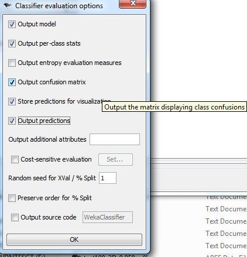

Click here to download all of the code described below
BlobMeshAligner.c, BlobmeshAligner.h
This is the main class that is responsible for aligning a blob to a mesh, which was adapted from Tom's original 6D alignment code to align two meshes. It requires the GAPS library. Its constructor takes 5 parameters:
The filename of the mesh
The filename of point cloud
The (optional) output name of the aligned point cloud. Once the alignment is completed, the aligned point cloud will be saved to this file if "true" is passed to the "doAlign()" function. Since alignment is the bottleneck of the whole process, it makes sense to have an option to cache the alignment results for future tests varying epsilon. Just pass null to this if you don't intend to save it, though
A boolean to chose 3D or 6D alignment: true for 3D, false for 6D
The maximum number of points to randomly sample from the point cloud
The function doAlign() is called to do the alignment after the object is constructed. Note that if 3D alignment is being performed, there needs to first be a call to translatePointsZ(double blobZTrans, double meshZTrans) first, so that the ground positions of the mesh and the point cloud can be lined up (since there is no z translation in 3D alignment).
BatchAlign.cpp
This requires BlobMeshAligner.c and BlobMeshAligner.h, as well as the GAPS libraries. This file is used to run batch tests on a ton of blobs, and it outputs an ARFF file to be used with Weka. It takes about 24 hours to run all of the tests on the cycles machines if alignments are being done for the first time, and about an hour to run the tests if the alignments have been pre-computed and cached.
Click here to view the results of all of the tests performed with this program
This program requires 8 command line arguments:
The directory where all of the city object mesh models reside. This was "manual_obj_models" in the current directory when I was doing my testing. Note that the program requires a text file, index.txt, to be placed in that directory which says which meshes to include. Click here to see the index.txt file that I used during my tests (note that I renamed it meshes.txt here, but it needs to be called index.txt)
The directory where the point cloud training set resides. The directory name I used during my tests was "manual_blobs." As for the meshes, this one also requires an index.txt file to say which point clouds to include in the test. Click here to see the one I used during my final tests.
The directory to store cached alignment results. The program will also look in this directory to see if any of the alignments have already been done from past batch tests. I use a special naming scheme to help me quickly find the results from previous tests. If the point cloud is named and the mesh to which it is aligned is called , then the result is called _.xyz if 6D alignment is being done, and __3D_.xyz (since the results of 3D and 6D alignment are likely different even for the same point cloud/mesh pair).
The name of the ARFF file to store the results of the test
A paramter that says whether 3D or 6D alignment is being performed. 1 for 3D, 0 for 6D
A file that holds the ground positions of the meshes. I found these by finding the blobs off of which Aleksey modeled each mesh (the ones that were the most similar to the modeled mesh, i.e. had the most points close to the mesh with no alignment), because the ground coordinates are stored in the last part of the blob name, but they're absent from the mesh name (which makes this file necessary). Click here to access the file I used in my tests (probably just hang onto this file).
NOTE: This parameter is only really relevant for 3D alignment
A real number representing epsilon, the cutoff distance (in meters) for saying whether an aligned point is close enough to the mesh
The maximum number of points to randomly sample from each point cloud. I used 100 in all of my tests. I would expect slightly better results using more points, but I didn't have time to test this (since it takes longer proportionally to how many points are being used.
NOTE:Tom and I found a problem with the original set of meshes where there were faces of zero area, which caused the closest points function in the mesh search tree to sometimes fail and return the original query point. I ran all of the meshes through the "msh2msh" program in the GAPS library and specified some minimum edge length, and this seemed to fix the problem.
****Click here to download the new set of meshes (absoultely necessary if this is going to be reliable at all; it increased the classification accuracy from 12% to 78% once this bug was fixed).
blobMeshAlign.cpp
This requires BlobMeshAligner.c and BlobMeshAligner.h, as well as the GAPS libraries. This program is used to align a single point cloud to a single mesh for debugging purposes. It then makes a call to simpleModelFittingViewer from the City project to view the results of the test. Note that I changed that code so that it draws the point cloud in green and the mesh in red, as opposed to the original model fitting viewer that drew everything in red. But I didn't commit these changes to the repository, so I would recommend changing those colors if you're going to use that program to view the results. Also, make sure that the executable simpleModelFittingViewer.exe is in the same directory as this program.
This program is similar to the batch test program, and it requires 6 command line arguments (very similar to the ones I already explained in the batch test)
The name of the mesh
The name of the point cloud
That name of the file to output the aligned point cloud
Says whether to do 6D or 3D: 1 for 3D and 0 for 6D
Unfortunatley, Weka doesn't have the option to do precision recall graphs or ROC curves over all classes. So I made my own program to calculate precision recall curves using the probability matrices from a Naive Bayes classification in Weka. This process is implemented in PrecisionRecall.java and its helper class ObjectGuess.java. PrecisionRecall.java accepts one command line argument, which is a text file holding the probability matrix exactly as it was outputted in Weka. Here's an example execution:
Choose Naive Bayes as the classifier in Weka
Be sure to check off "output predictions" under classifier evaluation options

Copy the probability matrix as is straight from Weka into a text file. There will be all sorts of +s, *s, and other markup, but my program parses and removes that stuff so don't touch it. Click here to view an example probability matrix that I saved.
Pass the location of that text file as a single parameter to PrecisionRecall.java, and wait for the magic to happen. Since each class can potentially have a different number of blobs in the training set, I decided to do linear interpolation to fill in the gaps when combining classes that have a different number of points on their precision-recall curves.
The program will output a list of all precision points to the console, which can then be plotted in something like Excel or MATLAB (I used MATLAB). They are also outputted on a scale from 0-1000 (because I was a bit lazy to do proper output in Java), so they should be divided by 1000 to get them on a scale from 0 to 1.
Automatically Batch Testing Random Blobs Against Random Meshes (Optional)
I created another program in Java called Tester.java to go through and pick sets of random blobs to test against random meshes. It uses the Java Robot class to launch viewers for the original point cloud and the original mesh (it takes screenshots of them and saves them to files), and then it takes a screenshot of the aligned point cloud. It then creates a web page showing the original mesh and point cloud and then the alignment results all side-by-side in a table, so that the success of alignment can be visually evaluated. This program requires the following programs from the City library to be one directory above: mshview.exe, simplePointsViewer.exe, and simpleModelFittingViewer.exe. It will also need blobMeshAlign.exe described above. The parameters have changed slightly since I last used it, so it won't work now (and it's not really necessary anymore). But I have included it for completeness.